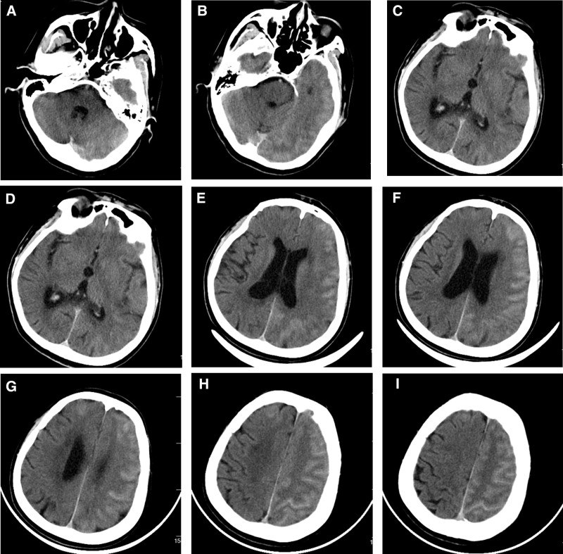
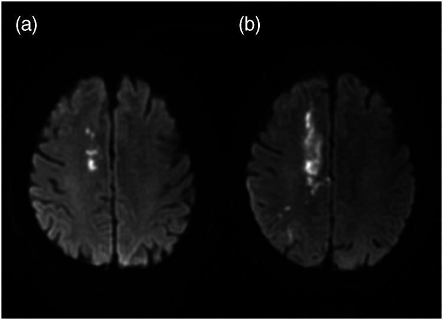
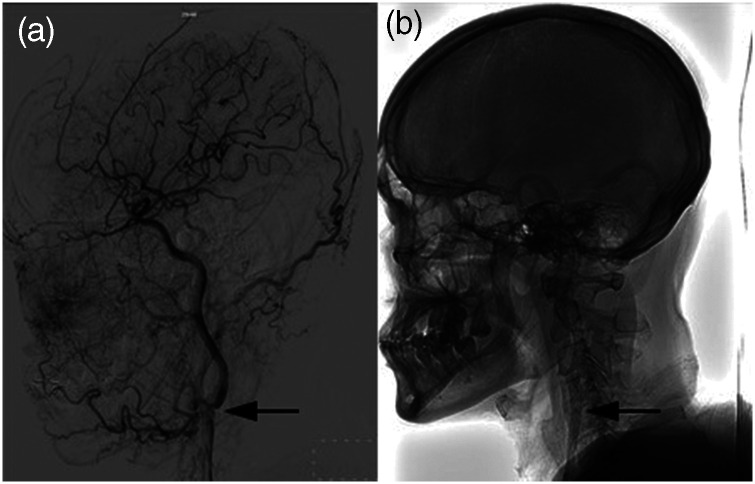
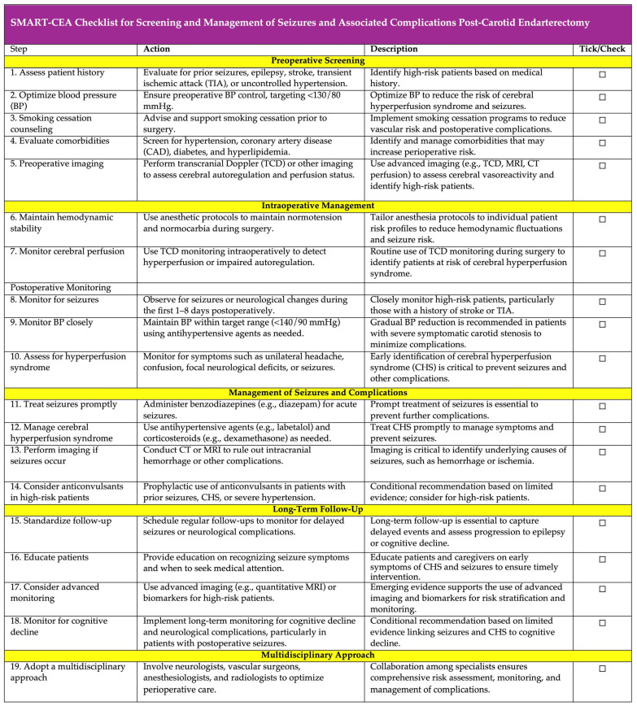

275 — Động kinh sau bóc nội mạc hoặc đặt stent động mạch cảnh / Seizures after carotid endarterectomy and stenting
Tags: pattern:dong-kinh pattern:phu-nao-vung pattern:nhoi-mau-nao pattern:xuat-huyet-nao vung:nao vung:dong-mach-canh protocol:CT-so-nao protocol:MRI-so-nao protocol:DWI protocol:EEG protocol:TCD
Mức chắc chắn (certainty): tổng hợp y văn (literature synthesis) — 1 phân tích gộp 20 nghiên cứu / 69.479 bệnh nhân về động kinh sau bóc nội mạc cảnh (Diagnostics 2025, PMC11840276, CC BY 4.0), 1 ca bệnh não do cản quang sau đặt stent cảnh có CT–MRI (Medicine 2025, PMC11835061, CC BY 4.0), 1 ca trạng thái động kinh sau đặt stent vì carotid web (J Int Med Res 2025, PMC12580545, CC BY-NC 4.0), 1 ca hạ natri máu nặng sau bóc nội mạc cảnh (Clin Case Rep 2021, PMC8643490, CC BY-NC-ND 4.0) và 1 ca động kinh cục bộ liên tục do CHS sau đặt stent (Cureus 2023, PMC10767296). Không có ca nguyên văn của nhóm — 3 ca trong quiz là ca công bố, lấy nguyên văn từ bài gốc.
Câu chốt: cơn động kinh sau tái thông cảnh không phải một chẩn đoán mà là triệu chứng của 6 nguyên nhân có điều trị ngược nhau. Ba số phải thuộc: gộp 20 nghiên cứu / 69.479 ca, động kinh sau bóc nội mạc cảnh 1% (0–2%), nhưng nghiên cứu tiên cứu 2% và khoảng dao động 0,01–13%; 93% ca có cơn từng tăng huyết áp trước mổ; tăng tưới máu (bất kỳ) 10% trong khi CHS có triệu chứng chỉ 1,9% sau CEA. Và điều tối quan trọng: bắt buộc chụp CT sọ không cản quang trước khi tăng thuốc chống động kinh — vì xuất huyết não do tăng tưới máu có tử vong 40–75%, còn bệnh não do cản quang thì tự hết trong 24–48 giờ nếu không can thiệp sai.
1. Tổng quan bệnh học – cơ chế hình ảnh
1.1 Vì sao tái thông cảnh lại gây cơn động kinh
- Mất tự điều hòa mạch não: vùng não sau hẹp mạn tính đã giãn tiểu động mạch tối đa; khi mở hẹp, lưu lượng tăng > 100% so với nền (định nghĩa tăng tưới máu) → vỡ hàng rào máu–não → phù vận mạch → tế bào thần kinh trong vùng phù bị kích thích = cơn động kinh, có thể tiến tới xuất huyết ổ.
- Cơ chế thứ hai — thiếu máu: cục xơ vỡ hoặc huyết khối di chuyển trong lúc can thiệp → nhồi máu vỏ–dưới vỏ → cơn động kinh cục bộ, thường kèm khiếm khuyết thần kinh khu trú.
- Cơ chế thứ ba — thẩm thấu: bệnh não do cản quang (contrast-induced encephalopathy, CIE) xảy ra khi cản quang qua được hàng rào máu–não bị vỡ và thấm vào vỏ não; cản quang độc với tế bào thần kinh → co giật, mù vỏ não, lú lẫn, liệt nửa người, hồi phục 24–48 giờ.
- Cơ chế thứ tư — natri: sau mổ cổ, SIADH do tăng ADH (tổn thương thanh mạc cảnh, giảm tín hiệu áp lực từ xoang cảnh) → hạ natri → lú lẫn, co giật. Y văn chỉ có 3 ca hạ natri đáng kể sau CEA trước ca báo cáo; ca nặng nhất Na 109 mmol/L.
- Cơ chế thứ năm — xuất huyết: tăng tưới máu nặng → xuất huyết não (ICH); đây là nguyên nhân chết người và là lý do phải chụp CT trước mọi xử trí khác.
1.2 Số liệu định lượng phải nhớ
- Tần suất sau CEA: gộp 20 nghiên cứu / 69.479 bệnh nhân = 1% (95% CI 0–2%; I² = 93,52); nghiên cứu tiên cứu 2% (0–4%; I² = 76,34) so với hồi cứu 0% (0–1%; I² = 91,51); dao động từng nghiên cứu 0,01–13%. Tuổi trung bình 67,7; tăng huyết áp 71,9%, bệnh mạch vành 23%.
- Thời gian theo dõi: 1–8 ngày sau mổ (một nghiên cứu tới 14 ngày) — nghĩa là cơn muộn sau 1 tuần có thể bị bỏ sót trong các nghiên cứu này.
- Tăng huyết áp trước mổ: gặp ở 93% (85–98%) bệnh nhân có cơn sau CEA (Mỹ 95%, châu Âu 90%, châu Á 60%); OR 2,71 (0,78–9,41) — xu hướng tăng nguy cơ nhưng không có ý nghĩa thống kê, I² = 0%.
- Tăng tưới máu: gộp 10% (5–16%; I² = 97,43) ở 10.868 bệnh nhân (11 nghiên cứu), nhưng CHS có triệu chứng chỉ 1,9% sau CEA và 1,16–1,2% sau CAS; ICH do tăng tưới máu 0,37% sau CEA / 0,51–0,74% sau CAS, tử vong khi có ICH 40–75% (bài 271).
- CAS: chưa có phân tích gộp riêng về động kinh; dữ liệu chủ yếu là ca báo cáo (trạng thái động kinh, động kinh cục bộ liên tục, CIE).
- CIE: rất hiếm — bài tổng quan ca không nêu được tỉ lệ chính xác; đặc điểm nhận diện quan trọng hơn con số: CT có đường băng tăng đậm trong rãnh cuộn não, đậm độ bằng lòng mạch, không choán chỗ, tan nhanh.
- Hạ natri sau CEA: 3 ca đã báo cáo trước đây; ca mới: nữ 73 tuổi, POD 4, Na 109, Na niệu 83, urê máu 10 mg/dL, acid uric 1,5, osm máu 224, osm niệu 405 → SIADH; bù 100 mL NaCl 3% → Na 115 sau ~4 giờ, 119 sau 24 giờ, ra viện 129 mmol/L.
- Động kinh cục bộ liên tục (epilepsia partialis continua): nam 76 tuổi, ngày 4 sau CAS, cơn giật tay trái còn ý thức, EEG bán cầu phải có nhịp theta/delta lặp lại tới 40 giây, DWI/CT âm tính (chỉ có ổ nhồi máu cũ); cần levetiracetam 500 mg × 2/ngày + oxcarbazepine 600 mg × 2/ngày, tăng levetiracetam 1.000 mg × 2/ngày + lacosamide 100 mg × 2/ngày mới cắt cơn.
1.3 Vì sao hình ảnh trông như vậy
- CT không cản quang: máu tươi 60–80 HU, vôi > 100 HU, cản quang 80–300 HU. Trong CIE, cản quang trong rãnh có đậm độ tương đương lòng mạch, bờ theo rãnh cuộn não, không tạo khối, và biến mất sau 24–48 giờ — khác máu dưới nhện (đậm độ cao hơn, thường có máu trong bể nền).
- DWI/ADC: nhồi máu cấp = DWI sáng + ADC giảm ngay từ vài phút; phù vận mạch do tăng tưới máu = DWI âm hoặc chỉ sáng nhẹ + ADC tăng. Đây là cách phân biệt CHS với nhồi máu thuyên tắc trong 24 giờ đầu.
- Phù vận mạch làm T2/FLAIR tăng tín hiệu vỏ–dưới vỏ, không theo lãnh thổ mạch; nhồi máu theo lãnh thổ (MCA/ACA/PCA) và có bờ rõ theo mạch.
- EEG: cơn cục bộ có sóng nhọn/theta–delta lặp lại ở bán cầu tổn thương; EEG bình thường không loại trừ cơn đã tự hết, nhưng EEG là bắt buộc khi bệnh nhân còn lú lẫn sau cơn để tìm trạng thái động kinh không co giật (NCSE).
2. Mẫu hình + chẩn đoán phân biệt theo thời điểm (Gamut)
- < 24 giờ sau can thiệp: CIE (1 giờ sau stent, lú lẫn/aphasia/co giật, CT có băng tăng đậm rãnh) · nhồi máu thuyên tắc (khiếm khuyết khu trú, DWI sáng) · CHS sớm (đau đầu cùng bên, huyết áp cao) · xuất huyết (đau đầu dữ dội, CT máu).
- 1–7 ngày: CHS (đỉnh 1–7 ngày) · ICH do tăng tưới máu · nhồi máu tiến triển (như ca carotid web: cơn ngày 13, ổ nhồi máu lớn thêm) · SIADH/hạ natri (POD 4 trong ca minh họa) · động kinh cục bộ liên tục (ngày 4 sau CAS).
- > 7 ngày: CHS muộn (đã ghi nhận ngày 15) · động kinh sau nhồi máu (muộn hơn, do sẹo) · tái hẹp/tắc stent.
- Theo kiểu cơn: cơn cục bộ vận động (tay/mặt) · động kinh cục bộ liên tục (giật liên tục một vùng, còn ý thức) · cơn toàn thể hóa thứ phát · trạng thái động kinh (> 5 phút hoặc nhiều cơn không hồi phục) · NCSE (lú lẫn kéo dài, không giật).
- Theo hình ảnh: CT bình thường · băng tăng đậm trong rãnh (CIE) · ổ giảm đậm theo lãnh thổ (nhồi máu) · ổ tăng đậm trong nhu mô (ICH) · phù vỏ–dưới vỏ không theo lãnh thổ (CHS).
- Gợi nhớ 6 nguyên nhân "CIE-CHS-ICH-INF-Na-EPI": Contrast (CIE) · Hyperperfusion (CHS) · ICH · Infarct · Na (SIADH) · EPIlepsy cũ.
3. Bảng so sánh phân biệt (ma trận đối chiếu)
| Thực thể (entity) | Hình ảnh điển hình | Chốt vào (rule-in) | Chốt loại (rule-out) | Gợi ý xác nhận |
|---|---|---|---|---|
| CHS có cơn động kinh | Phù vỏ–dưới vỏ cùng bên, DWI âm/ADC tăng, có thể xuất huyết điểm | Đau đầu cùng bên + huyết áp tăng + DWI âm trong 1–7 ngày | DWI sáng/ADC giảm theo lãnh thổ → nhồi máu, không phải CHS | ASL/CTP, TCD, theo dõi huyết áp |
| Nhồi máu thuyên tắc | Ổ DWI sáng + ADC giảm theo lãnh thổ, có thể nhiều ổ | Khiếm khuyết khu trú đột ngột + DWI dương tính | DWI âm + phù lan tỏa → không phải nhồi máu | MRI DWI/ADC, CTA mạch |
| Bệnh não do cản quang (CIE) | Băng tăng đậm theo rãnh cuộn não, đậm độ bằng lòng mạch, không choán chỗ, tan sau 24–48 giờ | Khởi phát 1–2 giờ sau bơm cản quang + CT băng rãnh + hồi phục nhanh | Máu thật (đậm độ cao hơn, không tan) hoặc DWI sáng lớn | CT lặp lại sau 24 giờ, MRI |
| Xuất huyết não do tăng tưới máu | Ổ tăng đậm trong nhu mô ± phù, thường hạch nền/thùy | Đau đầu dữ dội + nôn + CT có máu | CT không có máu → loại ICH | CT không cản quang cấp cứu |
| Hạ natri/SIADH sau mổ | Não không có tổn thương cấp; có thể phù não lan tỏa | Na < 130 + Na niệu > 30 + osm máu thấp + acid uric thấp | Na bình thường → loại trừ | Điện giải, osm máu/niệu, cortisol, TSH |
| Động kinh do sẹo cũ/epilepsy | Ổ nhồi máu/xuất huyết cũ, teo cục bộ, không phù mới | Tiền sử cơn + tổn thương cũ trên MRI + EEG ổ động kinh | Tổn thương mới cấp → tìm nguyên nhân khác | MRI có/không cản quang, EEG |
- Ảnh ghép đối chiếu: không tạo ảnh ghép vì các ảnh thuộc 4 bệnh nhân khác nhau; ảnh giữ nguyên bản, đặt riêng.
4. Protocol xử trí + theo dõi
4.1 Cấp cứu tại giường (làm song song, không chờ)
- ABC, đường huyết mao mạch, điện giải (Na, Ca, Mg), khí máu, ECG; hỏi thuốc hạ áp/thiazide đang dùng.
- CT sọ không cản quang NGAY — mục tiêu số một là loại trừ ICH trước khi dùng thuốc chống động kinh hoặc hạ áp mạnh.
- Đo huyết áp hai tay, đặt monitor; nếu SBP > 180 mmHg → hạ áp từ từ bằng labetalol (tránh tụt nhanh gây nhồi máu vùng ranh giới).
- Đặt nội khí quản nếu trạng thái động kinh kéo dài hoặc tụt oxy; theo dõi sát khi dùng benzodiazepine vì ca trạng thái động kinh đã tụt SpO₂ < 90% sau diazepam.
4.2 Thuốc và ngưỡng
- Cắt cơn cấp: benzodiazepine (diazepam 10 mg TM hoặc midazolam) là bước đầu; nếu không cắt → thuốc chống động kinh đường TM.
- Thuốc chống động kinh: valproate 20 mg/kg TM rồi 20 mg/kg/ngày (ca trạng thái động kinh dùng và cắt cơn) hoặc levetiracetam 500 mg × 2/ngày; nếu còn cơn → tăng 1.000 mg × 2/ngày, thêm oxcarbazepine 600 mg × 2/ngày hoặc lacosamide 100 mg × 2/ngày.
- CHS: hạ huyết áp có kiểm soát, giữ SBP 110–140 mmHg (bài 271); corticoid (dexamethasone) khi có phù não; không hạ áp quá nhanh.
- CIE: ngừng cản quang, corticoid + mannitol + albumin, theo dõi 24–48 giờ; không dùng thrombolysis vì chẩn đoán nhầm thành nhồi máu (ca gốc đã dùng urokinase/tirofiban trước khi loại trừ).
- SIADH: NaCl 3% 100 mL bolus khi có triệu chứng thần kinh; mục tiêu tăng 6–10 mmol/L trong 24 giờ đầu, sau đó hạn chế nước 1 L/ngày, ngừng thiazide, xét urea nếu cần; không sửa quá nhanh (nguy cơ hủy myelin thẩm thấu).
- Thời gian dùng thuốc: chưa có khuyến cáo riêng cho cơn sau tái thông cảnh; thực hành hợp lý là 3–6 tháng nếu cơn do nguyên nhân thoáng qua (CIE, CHS, hạ natri đã sửa) rồi đánh giá lại; dài hơn nếu có tổn thương cấu trúc (nhồi máu/xuất huyết) hoặc EEG còn ổ động kinh. Ghi rõ đây là suy luận thực hành, không phải bằng chứng thử nghiệm.
- Lái xe/trở lại làm việc: chưa có quy định riêng cho cơn sau can thiệp cảnh; khuyên không lái xe cho tới khi được thần kinh đánh giá và không còn cơn khi đang dùng thuốc.
4.3 Theo dõi sau can thiệp (theo SMART-CEA)
- Sàng lọc trước mổ: tiền sử cơn động kinh, TIA/đột quỵ, tăng huyết áp, hút thuốc; tối ưu huyết áp < 140/90 mmHg trước mổ.
- Theo dõi trong mổ: TCD phát hiện tăng vận tốc MCA; giữ normotension–normocarbia.
- Sau mổ: theo dõi 1–8 ngày (SMART-CEA), đo huyết áp và tri giác mỗi 1–4 giờ trong 24 giờ đầu; đau đầu + tăng huyết áp + lú lẫn = báo động CHS.
- Giáo dục bệnh nhân: đau đầu dữ dội, nôn, nhìn mờ, co giật, yếu tay chân → cấp cứu ngay.
flowchart TD A[Cơn co giật sau CEA hoặc CAS] --> B[ABC, glucose, điện giải, ECG] B --> C[CT sọ không cản quang NGAY] C -->|Có máu trong nhu mô| D[Xuất huyết não: hạ áp có kiểm soát, hội chẩn ngoại thần kinh] C -->|Băng tăng đậm theo rãnh, tan nhanh| E[Bệnh não do cản quang: corticoid, mannitol, không tiêu sợi huyết] C -->|Giảm đậm theo lãnh thổ hoặc DWI sáng| F[Nhồi máu: CTA mạch, chống kết tập, không hạ áp mạnh] C -->|Bình thường hoặc phù vỏ không theo lãnh thổ| G[CHS: giữ SBP 110–140, corticoid nếu phù] C -->|Không tổn thương cấp| H[Đo Na: SIADH nếu Na thấp và Na niệu cao] F --> I[EEG nếu còn lú lẫn hoặc cơn tái phát] G --> I H --> I E --> I I -->|Có ổ động kinh hoặc cơn tái phát| J[Thuốc chống động kinh 3–6 tháng, đánh giá lại] I -->|EEG bình thường, cơn đã cắt| K[Theo dõi 24–48 giờ, giáo dục tái khám]
4.4 Phân tầng thực hành (không có RADS cho biến chứng này)
- Bậc 1 — cơn đơn lẻ, CT sạch, điện giải bình thường: quan sát 24 giờ, không nhất thiết dùng thuốc dài ngày.
- Bậc 2 — cơn tái phát hoặc EEG có ổ: dùng thuốc chống động kinh, tìm nguyên nhân (MRI DWI, CTA, Na).
- Bậc 3 — trạng thái động kinh/NCSE: nhập ICU, benzodiazepine + thuốc TM, đặt nội khí quản nếu cần, EEG liên tục.
- Bậc 4 — có ICH: ưu tiên sống còn, hạ áp và hội chẩn ngoại thần kinh; không chờ EEG.
5. Biến thể bình thường và cạm bẫy
- Coi mọi cơn sau mổ là CHS: sai lầm chết người — ICH 0,37–0,74% nhưng tử vong 40–75%, và CIE/hạ natri cần điều trị hoàn toàn khác. CT trước, kết luận sau.
- Nhầm CIE với nhồi máu và dùng tiêu sợi huyết: ca gốc đã dùng urokinase + tirofiban trước khi loại trừ; CIE tự hết trong 48 giờ với corticoid–mannitol. Băng tăng đậm trong rãnh + DWI chỉ có điểm nhỏ không giải thích triệu chứng = CIE.
- Nhầm liệt Todd với nhồi máu mới: ca carotid web cho thấy ổ nhồi máu lớn thêm sau cơn, không phải Todd; MRI lặp lại quyết định.
- Bỏ sót NCSE: bệnh nhân lú lẫn kéo dài không giật sau mổ — EEG là chìa khóa; CT sạch không loại trừ.
- Hạ natri do thiazide + SIADH: ngừng chlorthalidone, không chỉ truyền muối; sửa Na 6–10 mmol/L/24 giờ.
- Dùng thuốc chống động kinh dự phòng cho mọi ca: SMART-CEA chỉ khuyến cáo có điều kiện ở người có tiền sử cơn, CHS hoặc tăng huyết áp nặng; dự phòng đại trà không có bằng chứng.
- Hạ huyết áp quá tay: tụt nhanh có thể gây nhồi máu vùng ranh giới; hạ từ từ, theo dõi tri giác.
6. Tự lượng giá — Blind Quiz
Ca 1 — Nữ 65 tuổi, đặt stent cảnh trái (hẹp 80%) với 150 mL iodixanol. Một giờ sau: lú lẫn, aphasia, yếu tay phải. Nhìn CT, mô tả trước.

- Câu hỏi: Đậm độ trong rãnh là máu hay cản quang? Vì sao? Bước tiếp theo và điều trị?
Bấm để hiện đáp án (findings + chẩn đoán)
- Dấu hiệu: nhiều đường băng tăng đậm (striped hyperdensity) trong rãnh cuộn não bán cầu trái, một phần rãnh trán phải, liềm não và lều tiểu não; phù nhu mô cùng bên; không choán chỗ, đậm độ bằng lòng mạch.
- Chẩn đoán: bệnh não do cản quang (CIE) — cản quang thấm qua hàng rào máu–não bị vỡ, không phải máu.
- Vì sao không phải máu: đậm độ tương đương lòng mạch, theo rãnh, tan nhanh trên CT lặp lại; không có khối; DWI chỉ có một điểm nhỏ ở thùy đỉnh trái, không giải thích triệu chứng.
- Điều trị: methylprednisolone 40 mg + albumin 10 g + mannitol 150 mL, ngừng tiêu sợi huyết/tirofiban; triệu chứng hết hoàn toàn ngày 2.
- Bài học: CT sớm + so đậm độ với lòng mạch + chụp lại phân biệt CIE với xuất huyết; không tiêu sợi huyết khi chưa loại trừ CIE.
- Nguồn: Qi et al., Medicine 2025;104:e41473, PMC11835061, CC BY 4.0.
Ca 2 — Nam 70 tuổi, nhồi máu trán phải, DSA có carotid web, đặt stent cảnh phải ngày 13. Sau stent: cứng chân trái từng cơn > 10 phút, sau đó yếu chân trái độ 0 kéo dài > 48 giờ.

- Câu hỏi: Cơn cứng chân là do CHS, Todd hay nhồi máu tiến triển? Vì sao? Xử trí thuốc?
Bấm để hiện đáp án (findings + chẩn đoán)
- Dấu hiệu: DWI (a) trước: nhồi máu dưới vỏ trán phải; (b) sau cơn: ổ nhồi máu LAN RỘNG, khớp lãnh thổ động mạch não trước.
- Chẩn đoán: trạng thái động kinh cục bộ (tonic status) do nhồi máu tiến triển, không phải CHS (huyết áp ổn định) và không phải liệt Todd (yếu kéo dài > 48 giờ, ổ nhồi máu lớn thêm).
- Xử trí: diazepam 10 mg cắt cơn nhưng tụt SpO₂ < 90% → ngừng; chuyển valproate 20 mg/kg TM + 20 mg/kg/ngày, sau đó levetiracetam 0,5 g × 2/ngày + valproate 0,5 g × 2/ngày; phục hồi mRS 1 sau 3 tháng, không tái phát cơn.
- Bài học: cơn + khiếm khuyết kéo dài = chụp MRI lặp lại, đừng gọi Todd; benzodiazepine có thể gây suy hô hấp, chuẩn bị đường thở.
- Nguồn: Jing et al., J Int Med Res 2025;53:3000605251386171, PMC12580545, CC BY-NC 4.0.

Cùng bệnh nhân ca 2: web (mũi tên) biến mất sau stent — nguyên nhân hẹp đã xử lý, nhưng nhồi máu vẫn tiến triển. Nguồn: PMC12580545, CC BY-NC 4.0.Ca 3 — Không có ảnh: một đồng nghiệp hỏi "cơn sau bóc nội mạc cảnh hiếm không, và có phải do tăng tưới máu?".
- Câu hỏi: Trả lời bằng 4 con số và 1 việc phải làm trước khi kê thuốc.
Bấm để hiện đáp án
- 1% (0–2%) gộp 20 nghiên cứu / 69.479 ca; 2% ở nghiên cứu tiên cứu; 93% ca có cơn từng tăng huyết áp; 10% tăng tưới máu nhưng chỉ 1,9% CHS có triệu chứng.
- OR tăng huyết áp trước mổ 2,71 (0,78–9,41) — xu hướng, không có ý nghĩa.
- Việc phải làm trước khi kê thuốc: CT sọ không cản quang loại trừ xuất huyết (tử vong 40–75%) và CIE (tự hết 24–48 giờ).
- Nguồn: Rajesh et al., Diagnostics 2025;15(1):6, PMC11840276, CC BY 4.0.
Checklist SMART-CEA (dùng khi đi buồng)

Bảng 19 bước: huyết áp mục tiêu < 140/90 mmHg, theo dõi 1–8 ngày, benzodiazepine khi có cơn, CT khi có cơn, corticoid khi phù, thuốc chống động kinh dự phòng có điều kiện. Nguồn: Rajesh et al., Diagnostics 2025, PMC11840276, CC BY 4.0.Bài liên quan chéo
- 271 – Hội chứng tăng tưới máu não sau can thiệp cảnh (CHS, ICH do tăng tưới máu, ca NVG sau CAS)
- 211 – Đột quỵ não (nhồi máu thuyên tắc, DWI/ADC)
- 3027 – Xuất huyết thùy não do CAA (phân biệt xuất huyết não)
- 270 – Carotid web (nguyên nhân hẹp cảnh ở người trẻ, ca quiz 2)
- 1755 – Hạ natri sau mổ vùng trên yên (SIADH vs CSWS)
Không dùng để chẩn đoán độc lập khi chưa có người hướng dẫn.